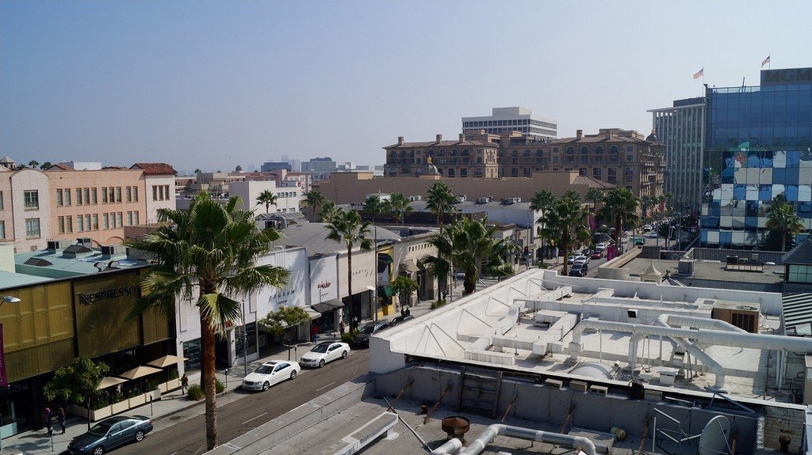
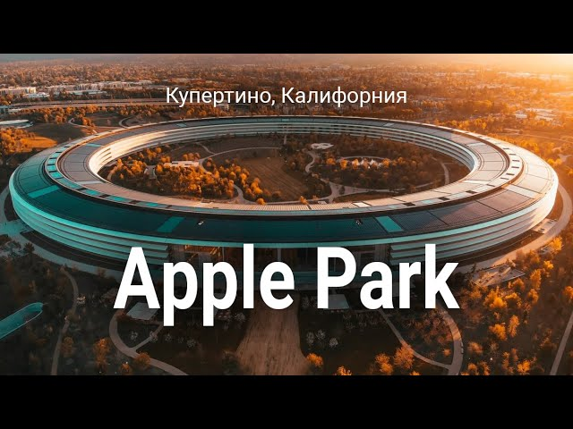
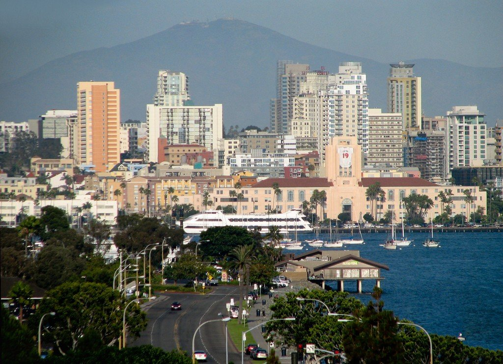
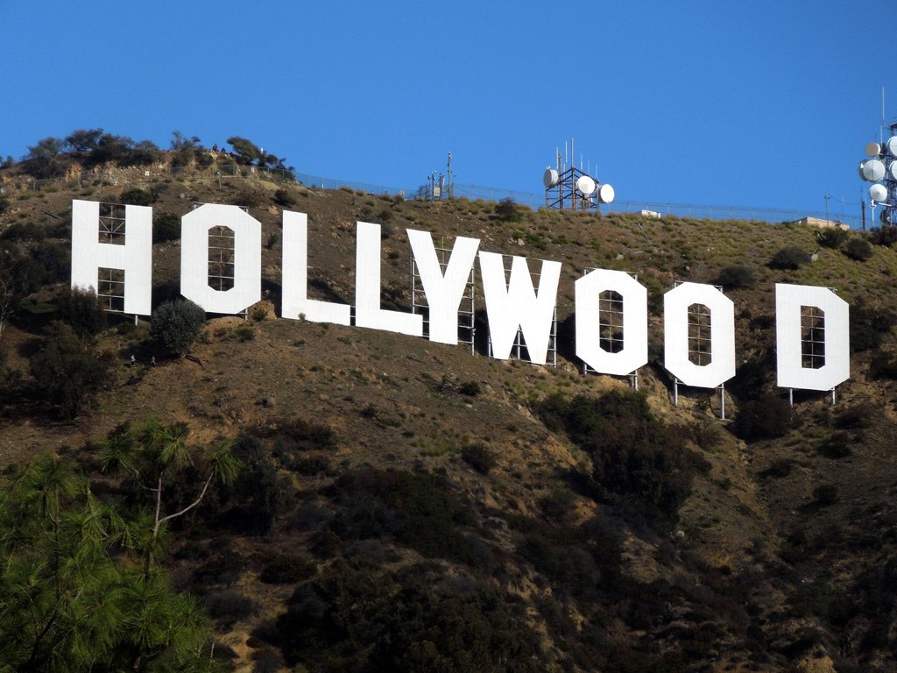
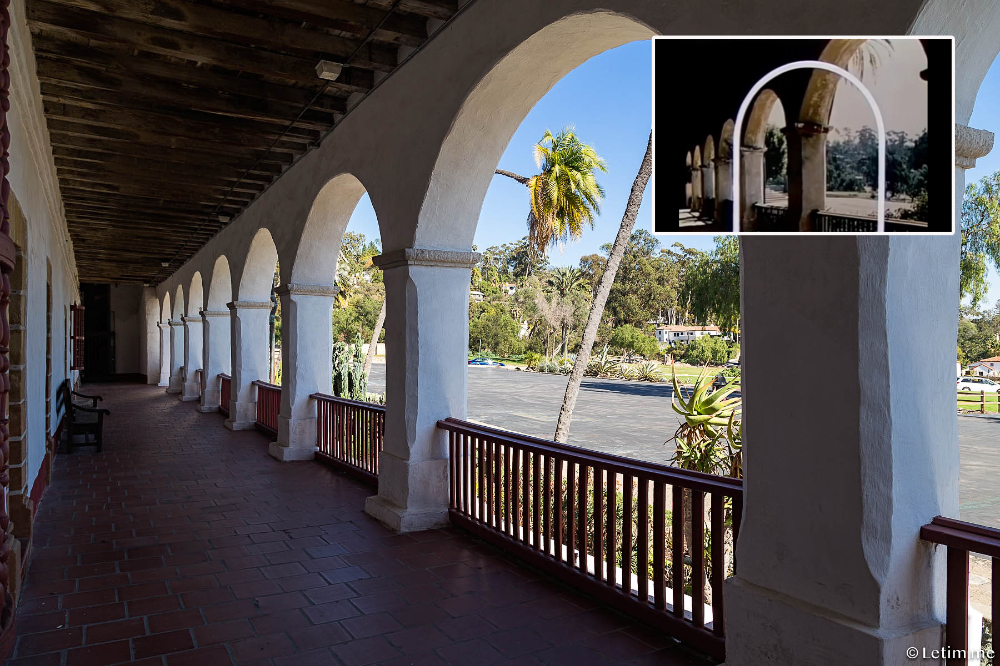
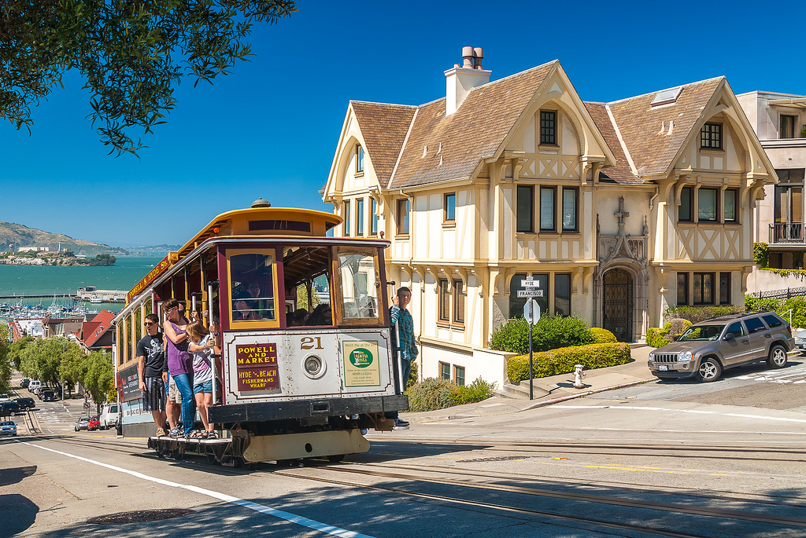
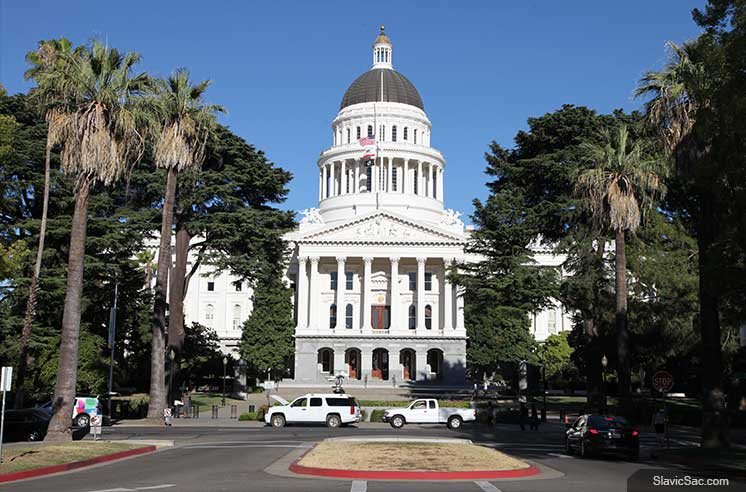
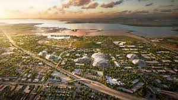
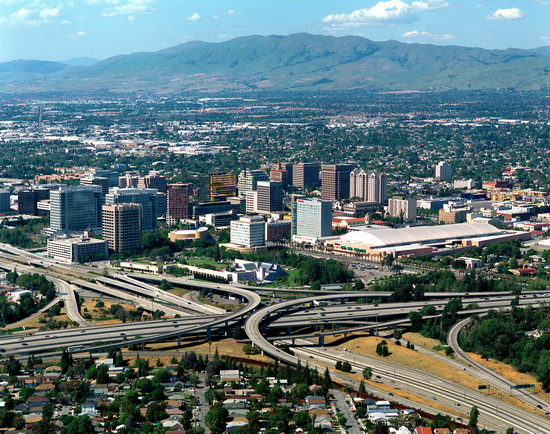
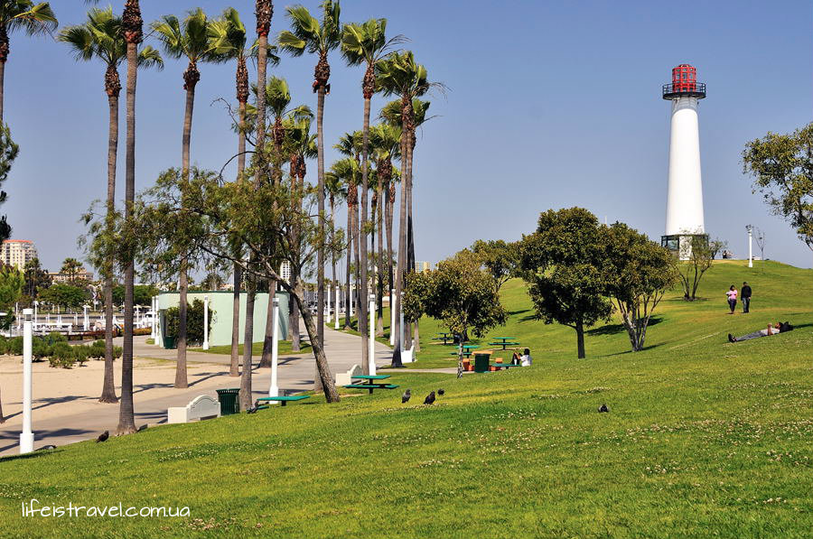

Беверли-Хиллз
 Беверли-Хиллз — многим известный пригород Лос-Анжелеса, который стал известен благодаря кинозвезде Дугласу Фейрбанксу младшему, поселившемуся здесь в 1919 году. Потом сюда приехали Чарли Чаплин, Глория Свенсон и Рудольф Валентино. Здесь всегда много знаменитостей. Одно упоминание о Беверли-Хиллз вызывает в воображении образ «Мазерати», ухоженных особняков и мегабогатых магнатов. Изощренно стильный, этот район — рай для богатых и знаменитых. «Звездочеты» заинтересуются автобусной экскурсией вдоль домов селебрити. Источник: WikiwayКупертино
Купертино - небольшой город. Он занимает 538 место по численности населения в своей стране (США), 103 место в регионе (штат Калифорния). Положение среди всех городов мира: приблизительно 7743 место. Следует помнить, что данные о городском населении постоянно изменяются и в большинстве случаев невозможно сделать точный подсчет. Дата основания поселения или первого упоминания неизвестны. Купертино находится в северном полушарии Земли.
Источник: GEOСан-Диего
Сан-Диего — прекрасный город на побережье Тихого океана в юго-западной части недалеко от границы с Мексикой, является административным центром округа Сан-Диего в штате Калифорния. Это второй по величине город Калифорнии, он известен фермами, государственными парками и лесами, пустынными районами и горами, а также многими километрами потрясающих тихоокеанских пляжей. Архитектура отличается эклектичной смесью от испанского колониального стиля до неоготики и мавританских построек.
Источник: WikiwayЛос-Анджелес
Лос-Анджелес обязан своей всемирной известностью двадцатому веку, расцвету киноиндустрии и сосредоточению в нем кинознаменитостей и всех, кто имеет к этому миру какое-либо отношение. Лос-Анджелес – это город, построенный на мечтах. Мечтах искателей и авантюристов о несметных богатствах, мечтах эмигрантов о новой лучшей жизни, мечтах начинающих актеров о блеске и роскоши Голливуда. Во время путешествия по городу вы непременно ощутите на себе энергию этих грез, воплощенную в камне и бетоне, металле и стекле, в чудесных парках, старинных и авангардистских архитектурных сооружениях, фонтанах, фресках и скульптурах. В этом городе вам совершенно не придется комплексовать по поводу своего возможного акцента. Лос-Анджелес является домом для представителей более чем 140 стран, говорящих как минимум на 224 различных языках. Город является вторым в США после Майами по доле населения, рожденного за пределами страны. Лос-Анджелес славится своими пляжами и известным районом – Голливудом. У этого города множество прозвищ — это и просто LA, и Лалаленд, и Саутленд (страна на юге), и Город ангелов, и Лотос-вилль, и Эль-Пуэбло («город» по-испански). Да, Лос-Анджелес — всемирная столица развлечении, однако о сути города не расскажут на киноэкране или в реалити-шоу; скорее, вы узнаете о ней из каждодневного опыта, шаг за шагом. И есть шанс, что чем больше вы будете узнавать этот город, тем больше вы будете наслаждаться им. Сейчас самое интересное время для поездки в Лос-Анджелес. Голливуд и Даунтаун переживают возрождение, а искусство, музыка, мода и кухня — на пике своего развития. Округ Лос-Анджелес довольно большой (88 городов на более чем четырех тысячах квадратных милей), но зоны туристических интересов очерчены весьма хорошо. Даунтаун, расположенный примерно в 19,2 км от побережья, сочетает исторической наследие, высокоинтеллектуальную культуру и энтузиазм «большой деревни». Вечно юный и модный Голливуд находится на северо-западе. Урбанистический дизайнерский шик и геи с лесбиянками царствуют в Западном Голливуде. К югу отсюда проходит Мьюзиум-Роу (Museum Row), главная артерия Мид-Сити. Далее к западу расположены шикарный Беверли-Хиллз, Вествуд и, на холме, Центр Гетто. Санта-Моника — туристический пляжный рай. В числе других городов округа: элегантный и сдержанный Малибу, богемная Венеция и хмельной Лонг-Бич. Величественная Пасадена лежит к северо-востоку от Даунтауна. Конечно, всем известны главные достопримечательности “Города ангелов“. Можно провести часы в парке студии Универсал (Universal Studios), долго гулять по красочному Сити Молл (City Walk), сфотографироваться у гигантских букв Голливуд, покрасоваться на удивительном холме Бичвуд Каньон Драйв (Beachwood Canyon Drive). Все туристы, приезжающие в Лос-Анджелес хотят спуститься по бульвару Голливуд и посмотреть на отпечатки рук американских знаменитостей у китайского театра Граумана (Grauman) или провернуть отличный шопинг в торговых центрах Голливуд и Хайленд-центр (Highland Center).
Источник: WikiwayСанта-Барбара
Город Санта-Барбара является центром олноимённого калифорнийского округа. Дата основания первого поселения на территории нынешнего города - 1786 год. Данное поселение назвали в честь Святой Великомученицы Варвары. Город расположен в сейсмически неустойчивой зоне. Летом 1925 года сильнейшее землетрясение разрушило практически все постройки города. Глава города - мэр. Кроме этого в Санта-Барбаре расположены учреждения округа. Мягкий климат города привлекает сюда посетителей из Лос-Анджелеса. В окрестностях Санта-Барбары расположен Неверлэнд (огромное поместье знаменитого на весь мир исполнителя Майкла Джексона). Еще более популярным город стал после выхода знаменитого одноименного телесериала, повествующего о жизни нескольких семей города.
Источник: Tochka-na-karteСан-Франциско
Сан-Франциско — один из самых красивых и популярных среди туристов городов мира, находится в штате Калифорния, США. Вопреки многолюдности и благодаря расположению у воды, обилию парков и холмистому рельефу тут редко охватываешь взглядом сразу больше, чем несколько кварталов. В Сан-Франциско все время кажется, будто находишься в небольшом городке, а не в центре мегаполиса, где проживает более 4 млн человек.
Источник: WikiwayСакраменто
Сакраменто – шестой по населению город Калифорнии, но именно он является столицей Золотого штата. Город расположен в центральной части штата. Он лежит в Калифорнийской долине, в месте, где в реку Сакраменто вливаются воды Американ-Ривер. Долина реки лежит в окружении гор Сьерра-Невада. Этот район опасен наводнениями, поэтому городская застройка ведётся преимущественно на восток от исторического центра Сакраменто – подальше от опасной зоны. Район Сакраменто – это место с очень благоприятным климатом: тёплой и влажной зимой и умеренным и сухим летом.
Источник: Tochka-na-karteМаунтин-Вью
Маунтин-Вью — небольшой город в округе Санта-Клара штата Калифорния, США, который получил название благодаря видам на горы Санта-Круз. Население по результатам переписи 2010 года составляло 74 066 чел. Город расположен в Кремниевой долине США, мировом центре высоких технологий. В Маунтин-Вью расположены главные офисы нескольких крупных компаний, как например Google, Mozilla Foundation, VeriSign, подразделений Microsoft, Intuit Inc., SGI и других. В городе также находится музей компьютерной истории.
Источник: Google Arts & CultureСан-Хосе
Сан-Хосе является третьим по населению городом в Калифорнии после Лос-Анджелеса и Сан-Диего, и считается первым поселением Калифорнии. Также Сан-Хосе считается столицей Кремниевой Долины. Об этих и о многих других интересных фактах о Сан-Хосе, читайте дальше. В 1950 году Сан-Хосе переквалифицировался из фермерского центра в высокотехнологический центр, использующий другой вид своих природных ресурсов - кремний. Этот элемент используется при изготовлении полупроводников и является основным компонентом в высокотехнологичных отраслях. Вследствие этого, территория, на которой расположены города Сан-Хосе, Сан-Франциско и Санта-Клара стала известна как «Кремниевая долина» (Silicon Valley).
Источник: Usa-infoЛонг-Бич
Лонг-Бич — крупный прибрежный город в Южной Калифорнии, прямо на юго-восточной границе Лос-Анджелеса. Лонг-Бич известен как один из наиболее разношерстных в культурном смысле городов США. Здесь живут латиноамериканцы, афроамериканцы, просто американцы и азиаты, и в целом Лонг-Бич гораздо больше напоминает города восточного побережья или Среднего Запада, нежели любой другой в Калифорнии. А ещё тут есть аквариум мирового уровня и плавучий музей/отель «Куин Мэри». Лонг-Бич знаменит своим стрит-артом. Самый известный его объект — это мураль «Планета океана», что покрывает всю поверхность крытого городского спортивного стадиона. Картина внесена в Книгу рекордов Гиннесса как самая крупная уличная роспись в мире.
Источник: TonkostiМалибу

В западной части округа Лос-Анджелес лежит город Малибу. Он занимает участок тихоокеанского побережья длиной почти 44 километра. Благоприятный климат и живописные ландшафты привлекли сюда в начале 20-го столетия актерскую элиту Голливуда. Это повлекло за собой строительство на побережье роскошных особняков, фешебельных вилл и дорогих усадеб для знаменитостей. До начала 16 столетия здесь проживало индейское племя чумаши. Они называли местность Хумаливо. С ее названием связано происхождение современного топонима. Первым европейцем, ступившим на побережье Хумаливо стал испанец Хуан Родригес Кабрильо. В 1542 году он в поисках пресной воды причалил к Лагуне Малибу. Следующее прибытие сюда европейцев произошло примерно 250 лет спустя. К началу 19 столетия здешняя территория была отвоевана у индейцев. Новые поселенцы использовали ее для сельскохозяйственных нужд. Часть территории современного Малибу в 1891 году стала собственностью семьи Фредерика Ринджа. Для предотвращения проникновения на их территорию посторонних лиц они пользовались услугами профессиональной охраны. В 1930-х годах через Малибу прошла первая автомобильная дорога. К этому периоду семейство Риндж разорилось и вынуждено было продать свою землю. До нынешних времен сохранился их дом, который находится на территории Парка штата Малибу-Крик. К самым известным строениям начала 20 столетия относят Замок Малибу и музей-виллу Гетти, а также здание университета, основанного в 1937 году.
Источник: Tochka-na-karte